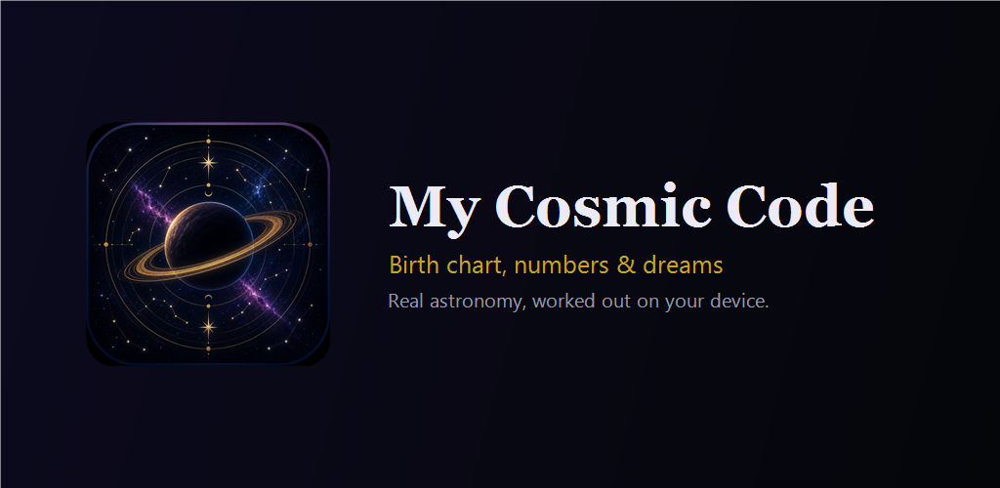

My Cosmic Code: Horóscopo
Horóscopo do dia, mapa astral, compatibilidade e dicionário dos sonhos.
Disponível no Google PlayExperimente aqui, no navegador
- Mapa NatalSeu projeto cósmico
- Calendário LunarCiclos e fases da Lua
- NumerologiaDecifre o poder dos números
- CompatibilidadeComo os seus mapas se encontram
- HoróscoposChinês, japonês e védico
- Céu NoturnoO céu real, ligado ao seu mapa
- Meu signoSeu signo solar e lunar
- Planetas hojeLua, planetas e retrógrados agora
- Carta do DiaPergunte ao Olhar Velado
- Dicionário dos sonhosTodos os símbolos, de A a Z


My Cosmic Code é um app de astrologia calmo e privado para todos os signos: um horóscopo do dia pessoal feito a partir do seu próprio mapa astral, um mapa natal completo calculado com astronomia real, compatibilidade amorosa e de amizade, numerologia, um mapa do céu, um diário de sonhos e um dicionário dos sonhos. Tudo é calculado no seu celular, e seus dados ficam nele.
Agora totalmente em português.
CÉU NOTURNO: O CÉU DE VERDADE
- Um mapa do céu em tempo real acima de você ou de qualquer cidade, a qualquer hora: as estrelas, as 88 constelações, a Lua e os planetas no céu hoje à noite.
- Apontar para o céu: erga o celular e o mapa acompanha, mostrando quais estrelas e constelações estão ali. Sem câmera.
- Esta noite pula para o céu escuro. Céu profundo adiciona galáxias, nebulosas e aglomerados estelares.
- O céu do meu nascimento: o céu real sobre o seu local de nascimento no momento em que você nasceu.
- Meu Céu Cósmico: seus planetas natais entre as estrelas e os planetas de hoje passando por eles — onde os planetas estão agora no seu mapa.
QUATRO HORÓSCOPOS
- Ocidental (seu mapa astral), védico (signo lunar, nakshatra, lagna, dasha), chinês (animal e elemento pelo Ano-Novo Chinês real) e japonês (eto e Ki das nove estrelas).
SEU HORÓSCOPO DE HOJE, DO SEU PRÓPRIO CÉU
- Hoje: seu dia pessoal, o signo da Lua agora e o próximo trânsito no seu mapa.
- A temporada que vem: os próximos trânsitos nos seus planetas.
- Avisos de trânsitos nos dias que importam para o seu mapa: trânsitos fortes, estações dos planetas, luas novas e cheias; no máximo três por semana.
- Fases da lua, calendário lunar e o signo da Lua dia a dia.
UM MAPA ASTRAL DE VERDADE, NÃO SÓ UM SIGNO
- Seu signo solar, seu signo lunar e seu ascendente a partir da data, hora e local de nascimento: os três signos que a astrologia lê juntos.
- Uma roda do mapa natal completa com planetas, casas, aspectos, ascendente e meio do céu; planetas retrógrados marcados.
- Uma visão do sistema solar e o céu dia a dia.
- Um Relatório Cósmico com textos para as 144 combinações de signo solar e ascendente.
OS 12 SIGNOS DO ZODÍACO
- Áries, Touro, Gêmeos, Câncer, Leão, Virgem, Libra, Escorpião, Sagitário, Capricórnio, Aquário e Peixes, cada um com seu elemento, planeta regente, pedra do signo e cor.
COMPATIBILIDADE AMOROSA E MAIS
- Compare dois mapas astrais em cinco áreas da vida: amor, intimidade, amizade, trabalho e bem-estar.
- Sinastria, mapa composto e sobreposição de casas.
- Sem nota nem porcentagem de compatibilidade: você vê como dois mapas realmente se encontram.
NUMEROLOGIA COM O CÁLCULO À MOSTRA
- Número do caminho de vida, ano pessoal e dia pessoal, com o cálculo à mostra.
UM DIÁRIO DE SONHOS PRIVADO, COM DICIONÁRIO DOS SONHOS
- Anote sonhos, números que você vê o tempo todo e símbolos que você não para de notar. Você pode ditar em vez de digitar.
- Toque em Analisar num sonho e o dicionário dos sonhos mostra como a tradição lê os símbolos que aparecem nele — uma cobra, os dentes, a água, uma queda, uma casa —, até cinco por sonho.
- Descreve, nunca prevê: o significado dos sonhos segundo a tradição, não o que vai acontecer. A última palavra sobre o seu sonho é sua.
- A análise também mostra com que frequência um símbolo volta. O dicionário dos sonhos funciona offline.
PRIVADO POR DESIGN
Sem anúncios, sem análise, sem rastreadores, sem conta. Seus dados de nascimento, seu mapa e seu diário ficam só no seu aparelho, e você pode exportá-los ou apagá-los no app. O ditado por voz funciona no seu celular; só para um idioma que o seu celular não consegue transcrever offline, o app pergunta antes se a sua voz pode ir para o serviço de voz do Google.
HONESTO
O app descreve o céu e os números como eles são e não afirma prever acontecimentos.
Telas, interpretações e dicionário dos sonhos em português, inglês, croata, alemão, espanhol, francês, italiano, polonês, turco, chinês (tradicional e simplificado), japonês e hindi.
Mais no app
- Mapa astral
- Calendário lunar
- Numerologia
- Compatibilidade dos signos
- Horóscopo chinês e védico
- Mapa do céu
- Meu signo
- Planetas hoje
- Carta do Dia
- Dicionário dos sonhos
Jurídico
Idiomas
English · Hrvatski · Deutsch · Español · Français · Português (Brasil) · Italiano · Polski · Türkçe · 繁體中文 · 简体中文 · 日本語 · हिन्दी